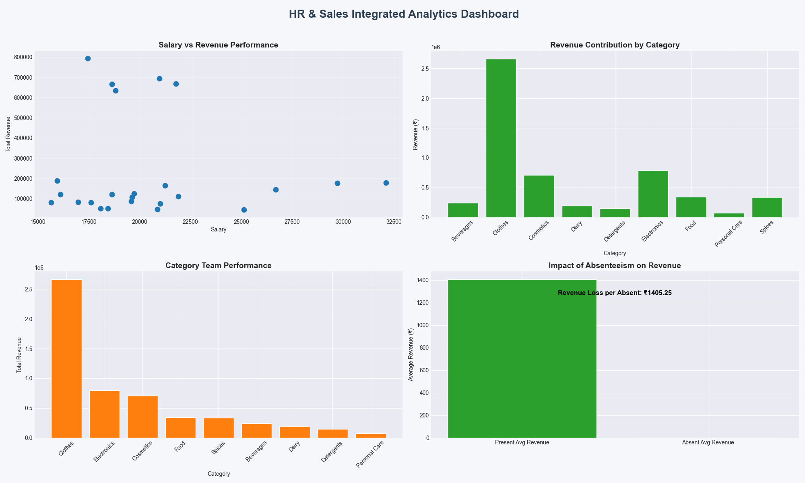
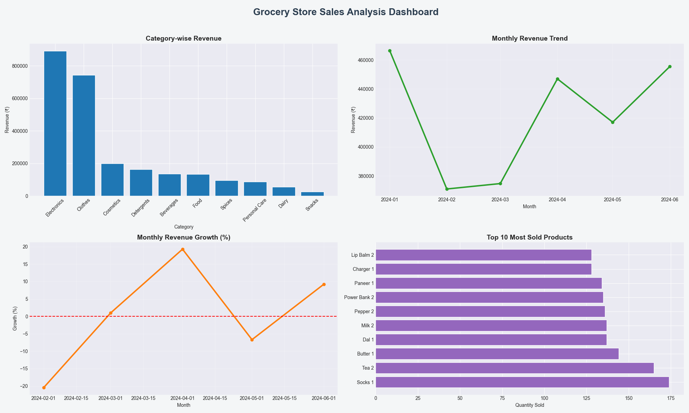
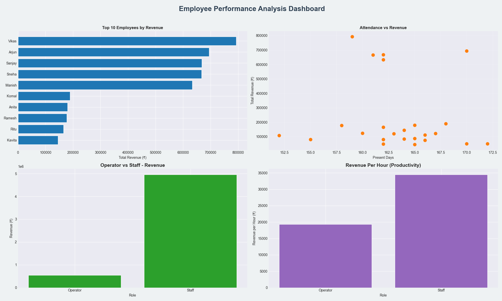

Deep exploratory data analysis across 2000+ retail transactions and 6 months of employee performance data — uncovering sales trends, top products, staff productivity patterns, and strategic business insights.
A multi-dimensional business analytics project combining retail sales data, employee performance metrics, and HR analysis into a unified reporting system — giving management a 360° view of business performance.
Built a Flask dashboard app alongside Jupyter notebooks to interactively explore the data and present findings to stakeholders.
The combined analysis delivered 12+ actionable business recommendations — from inventory reallocation and staffing optimisation to incentive structure redesign. Management now has a data-backed basis for every major operational decision.


